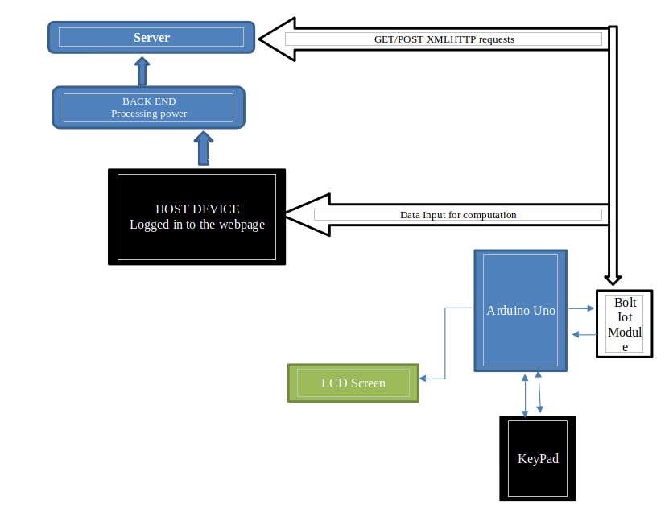
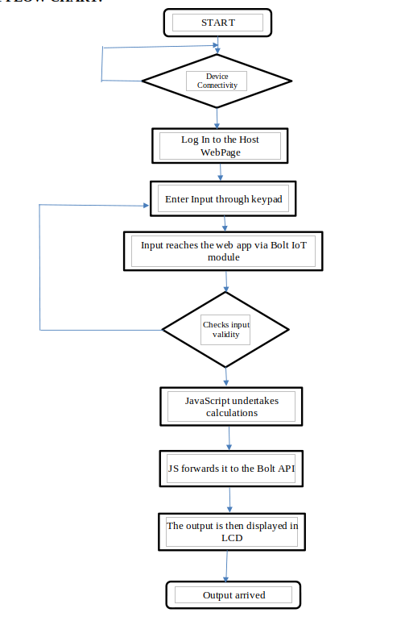
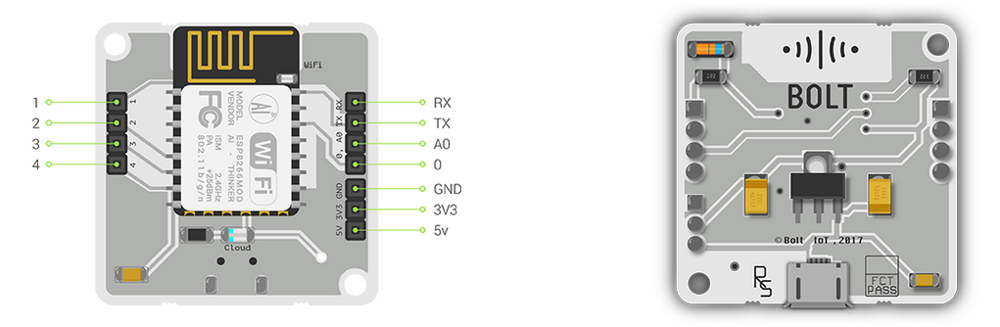
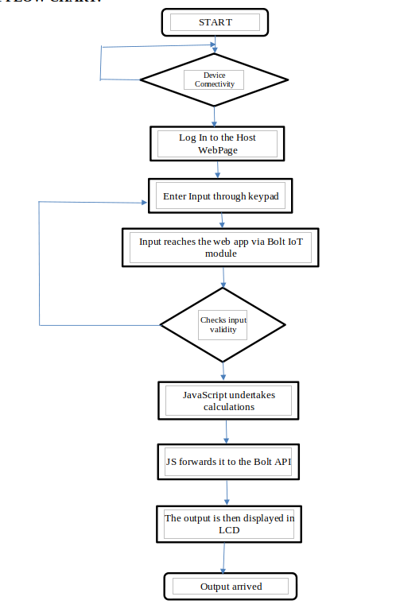
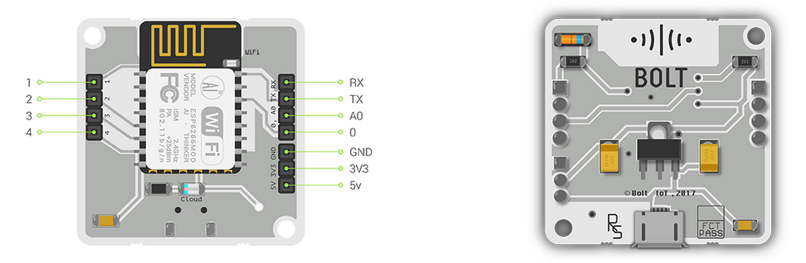

IoT Based Engineering Calculator
An electronic calculator is typically a portable electronic device used to perform calculations, ranging from basic arithmetic to complex mathematics. A calculator, usually but not always is handheld, designed to calculate problems in science, engineering and mathematics. A calculator is a microprocessor-based device which has all its functions predefined at the time of production without a chance for updating its contents. Here we try to change the concept of traditional calculators to an internet based calculating device which could solve more advanced problems in fields like engineering, physics and mathematics. A device with complete internet access cant be allowed in all situations and a better access to ready solutions for engineering problems, which could be helpful for students taking exams, on research and such applications, haven’t been provided yet by any means. So here we try to make a device with a touch of Iot so it could be accessible to everyone via Internet and could also do more complex problems. This is simple but could be revolutionary based upon the work we put in the backend to make a powerful web software to compute answers for multiple clients at same time. We might need a powerful server and a more powerful coding for our calculator to function flawlessly with its utmost power. Let us breakdown its basic functionalities and try to implement them with root level softwares and microprocessors to create a basic engineering calculator based on Iot

 


